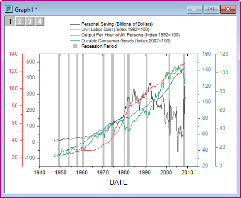

複数軸のプロット
MultiAxes-Plot
概要
このチュートリアルは、4Y軸プロットとリセッションバーを作成する方法を説明します。
- 
必要なOriginのバージョン: Origin 2015 SR0以降
ステップ
- 新しいワークブックを開き、ヘルプ: フォルダを開く: サンプルフォルダを選択して、サンプルフォルダを開きます。このフォルダ内のGraphingサブフォルダにあるmulti_axis_plot.txt ファイルを探します。空のワークシートにファイルをドラッグアンドドロップしてインポートします。
- ワークシートの左上角にマウスカーソルを配置します。マウスカーソルが右下向きに変わったら、マウスをクリックしてワークシート全体をクリックします。
- 右クリックして、ショートカットメニューから列XY属性の設定：XYXYを選択し、ワークシート列を適切なプロット属性にします。
- A～H列を選択し、メニューから、作図：複数区分/軸：4Ys YY-YY と操作して以下のようなグラフを作成します。
- X 軸上でダブルクリックして、X 軸 - レイヤ1ダイアログを開きます。参照線タブを開き、参照線の値ボックスの右にある参照ボタンをクリックします。ダイアログが縮小されるので、ワークシートのI列を選択します。完了 をクリックして、参照線タブに戻ります。
- 交互塗りつぶしにチェックを付け、線ヘッダのチェックボックスにを2回 クリックして、この列のチェックを全て外します。OKをクリックしてダイアログを閉じると、不況の期間を示す灰色の領域がグラフに追加されます。

- 下X軸を再度ダブルクリックして、Layer1の軸ダイアログボックスを開きます。スケールタブで、ダイアログを以下のように変更し、適用をクリックします。
- 目盛ラベルタブで、ダイアログを以下のように変更し、適用をクリックします。
- 軸と軸目盛タブを開き、左側パネルで上を選び、軸と軸目盛の表示にチェックを付けます。主目盛のスタイルには内側を選択し、副目盛のスタイルではなしを選択してからOKをクリックして適用し、ダイアログを閉じます。
- 凡例オブジェクト上で右クリックして、プロパティを選択します。右側にある凡例シンボル追加ボタンをクリックして、形状は塗りつぶしありの四角形にし、シンボルカラーは明るい灰色、サイズは30に設定します。追加および閉じるをクリックします。凡例プレビューボックスに新しいシンボルが追加されます。
- 上の編集ボックスに追加されたコード行をクリックし、末尾に、Recession Period と入力します。OK をクリックして、ダイアログを閉じます。
- 必要に応じて凡例のサイズ変更や移動を行い、各プロット上でクリックして開くコンテキストメニューからプロットタイプの変更: 折れ線を選択して、折れ線グラフに変更します。最終的に、次のグラフのようになります。